Design 74 · Asset kit
Afterglow Diorama
A cut-paper miniature of one coast: a mid-century house on a cliff, a boulevard of lamps, a mountain standing straight out of the sea. The sky over it is the real sky over Norway, and a day passes as you scroll. Real photographed skies, real paper fibre, honest light.
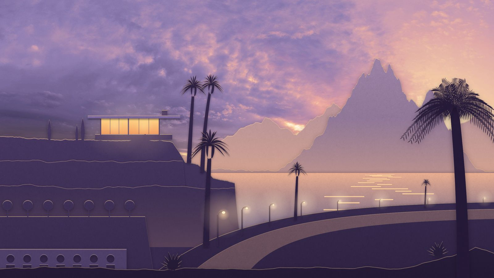
Hero 1 · Afterglow · real Poly Haven sky (Belfast Sunset, CC0) graded to the palette, paper layers rendered by paperworld.js
Hero imagery
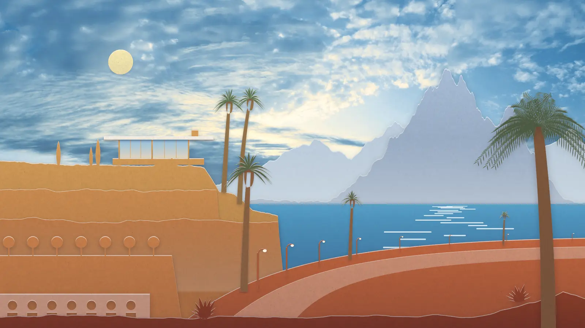
Hero 2 · Noon · sunshine version (Evening Road 01 sky, CC0)
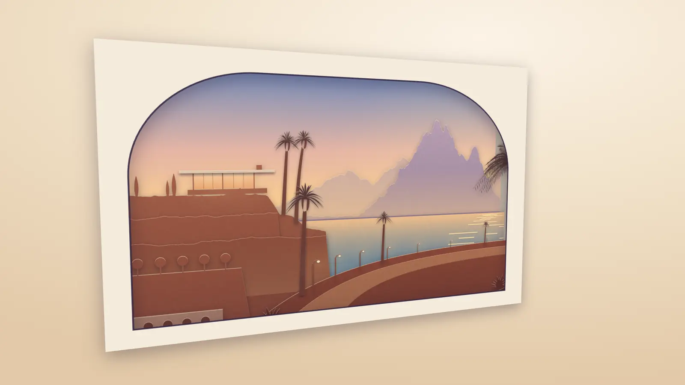
Hero 3 · The miniature, turned · golden hour


Hero layers · sky + 4 transparent sheets for parallax · the name sits between sky and mountains · move the pointer
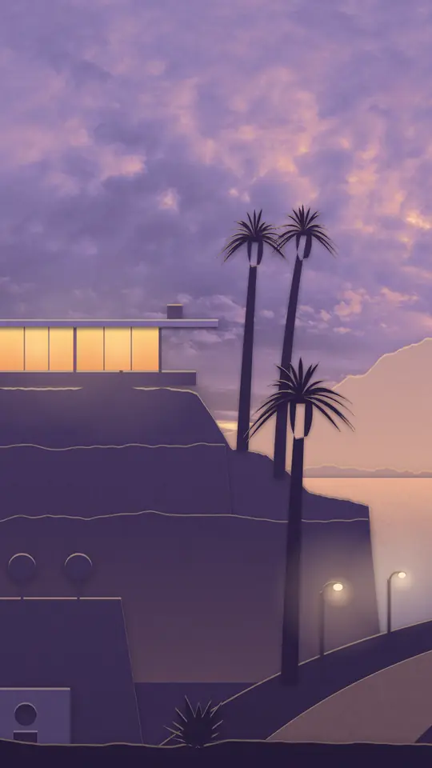
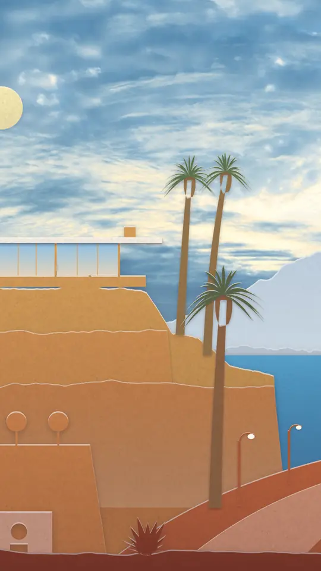
Portrait crops · 540 / 1080 · for phones
Interactive · the turnable diorama
js/diorama.js · six paper layers in CSS 3D, no WebGL · drag to turn · the sky follows the real sun over Norway (computed for Oslo) and refreshes every 30 s
Products · one hour each
MCP Emails · 08:00 · signage pylon
Fun Libs · 12:00 · tile in a sunlit wall
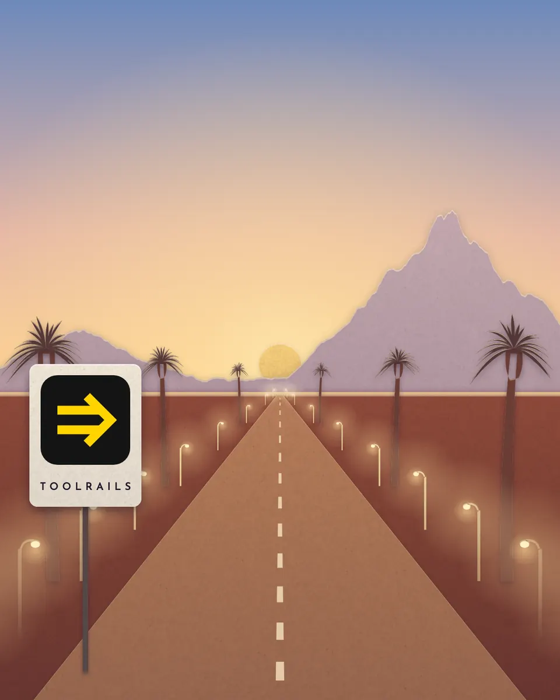
Toolrails · 18:30 · boulevard of light
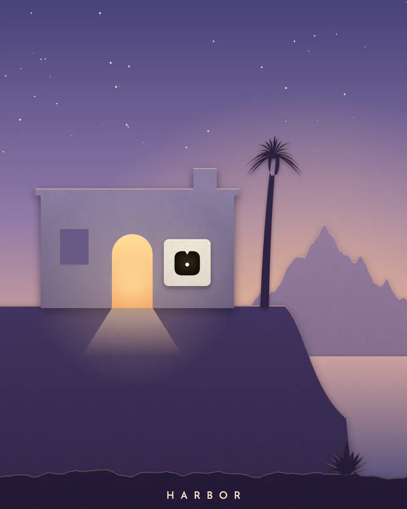
Harbor · 21:40 · the lit doorway
Retired · shuttered arches along the same street (lights off)
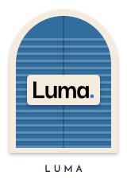
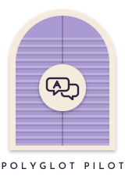
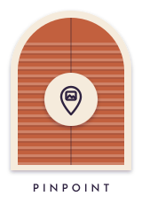
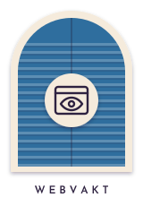
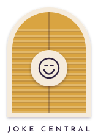
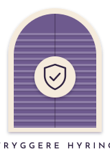
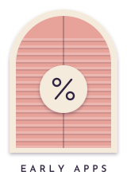
Identity

Mark · an arched opening; a sun behind a peak whose horizon cut makes an A
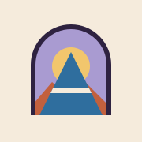
Favicon SVG · 180 px touch icon
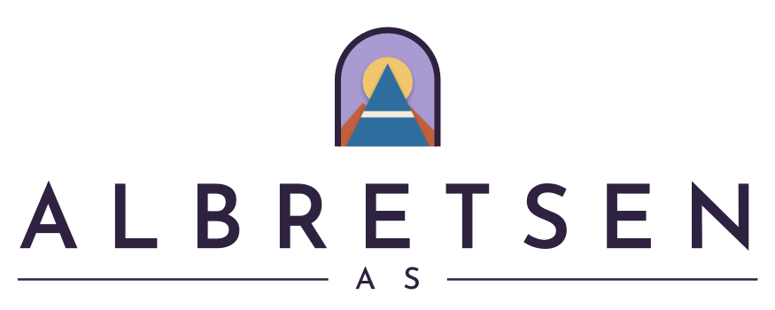
Stacked signage lockup

Wordmark · Josefin Sans 600 outlined, tracking 0.30 em · ink and paper
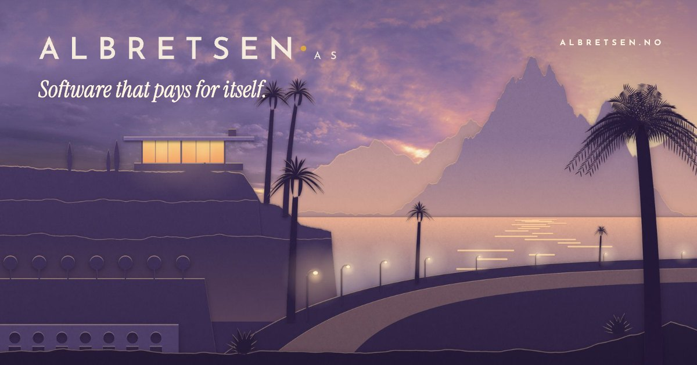
Open Graph · 1200 × 630
Palette · Riviera
Type
Josefin Sans 300–700 · signage capitals, tracking 0.30–0.42 em · labels, nav, product names
Instrument Serif italic · headlines, one per screen
MCP Emails gives AI agents real email: 17 tools across about 100 providers, open source. Fun Libs has passed 113,000 installs without a marketing budget. Each product gets one hour of the day and one honest sentence.
Instrument Serif roman · body, 18–21 px
DM Mono · commands, figures, the sky readout
Extras
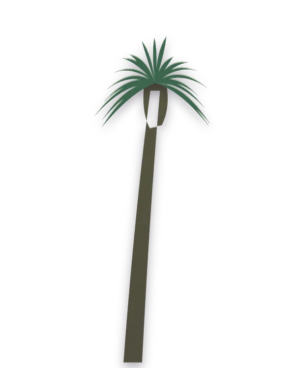
Fan palm
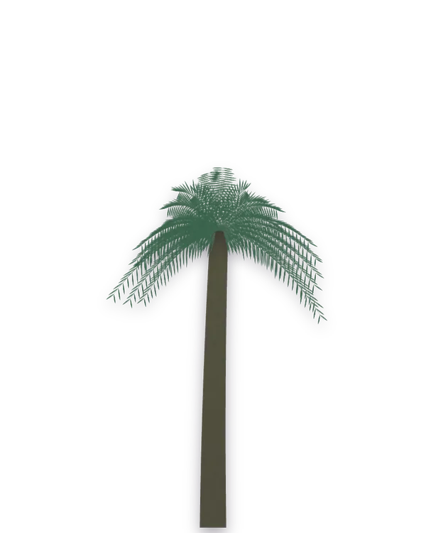
Date palm
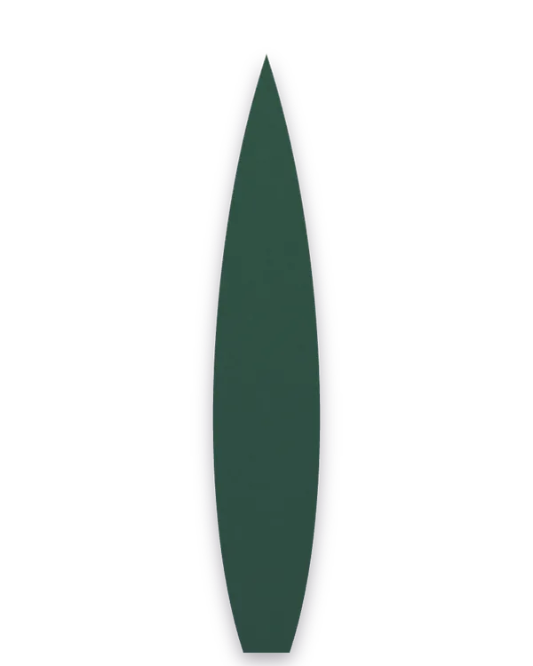
Cypress
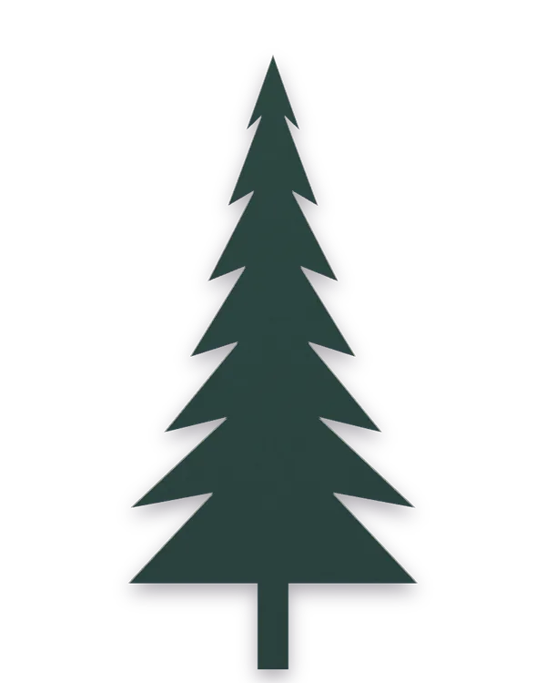
Spruce
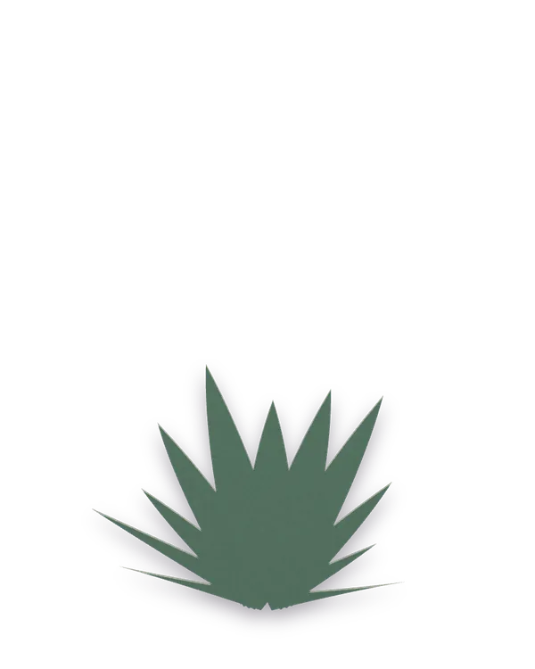
Agave
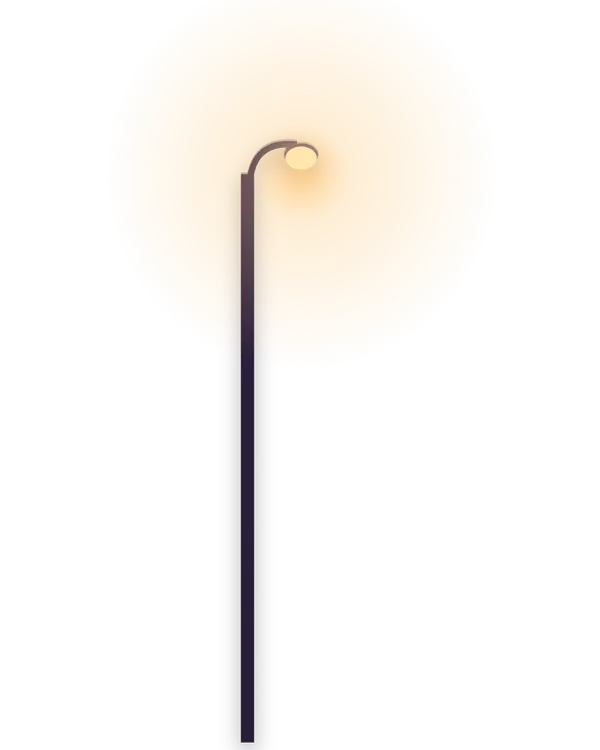
Lamp
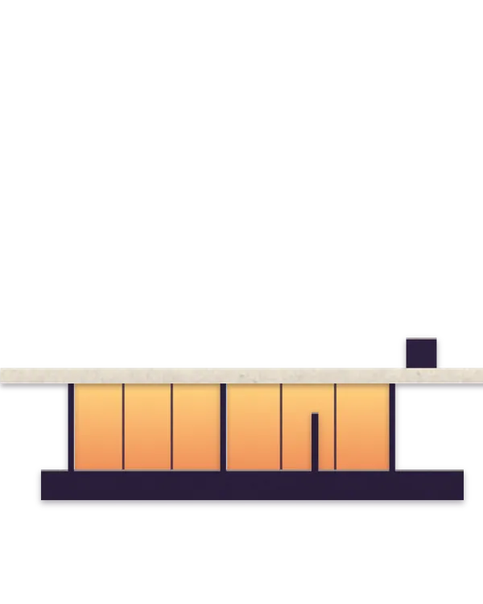
Pavilion
Breeze-block tile · seamless SVG
Paper grain · seamless 512 px (ambientCG Paper006, CC0)
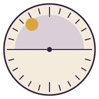
Sun dial · 24 h signage plate

Boulevard divider
Motion study
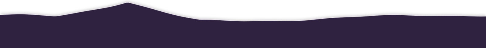
1 · Day Pass · one property, --day, from dawn to night; on the site it is scroll-driven and also steers the diorama
2 · Sign Light-Up · letters switch on in turn with one warm flicker
3 · Paper Lift · hover or focus; contact shadow becomes a soft lift
4 · Boulevard On · lamps ignite from the vanishing point toward you